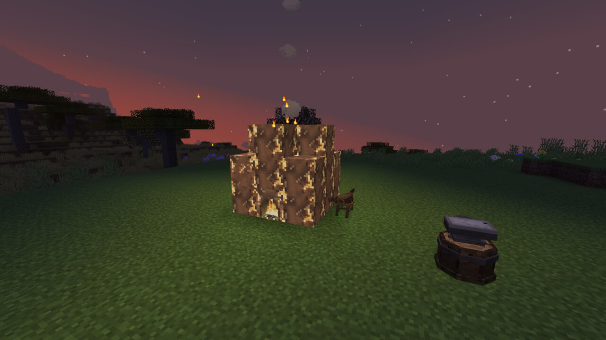
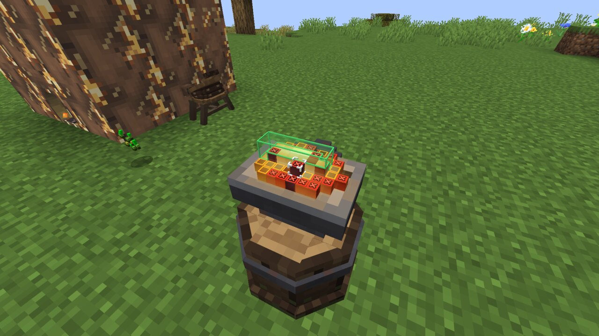
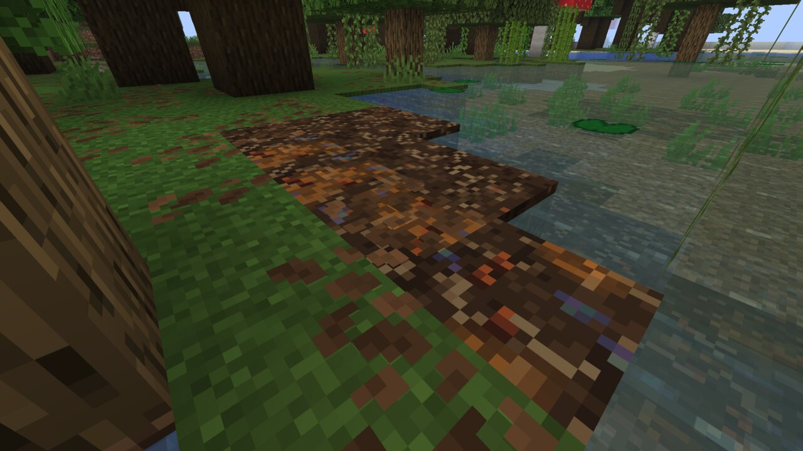
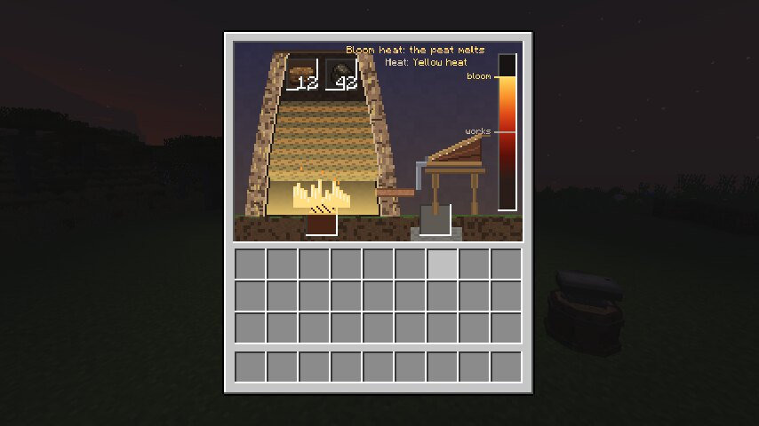
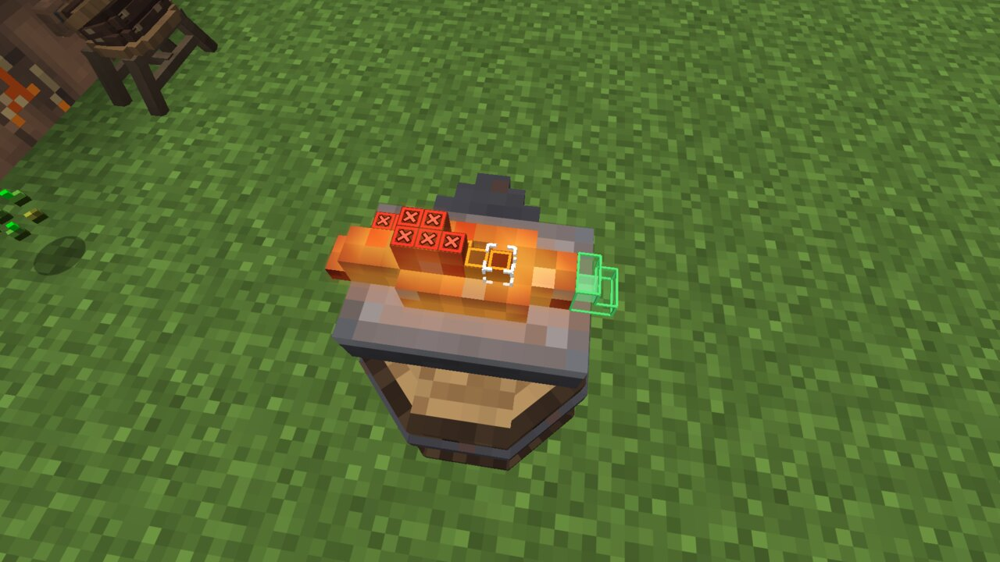
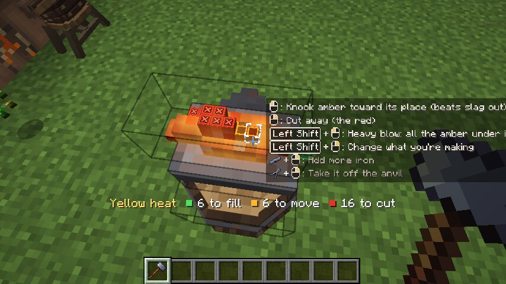
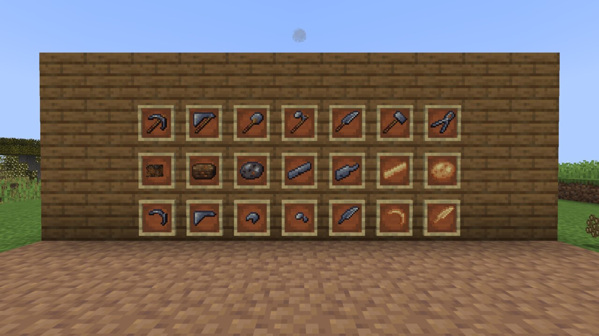

Bog iron & smithing
Our grandmothers' grandmothers had no mines: they had the bog, and the bog gave them iron. Dig iron peat out of a swamp, dry it, smelt it in a clay bloomery worked with bellows into a spongy bloom, and beat the bloom into tools on a stump anvil, voxel by voxel, while it's still bright. Bog iron tools are better than diamond and short of netherite.


Iron peat
In swamps and mangrove swamps, in beds of peat near the water, some of the peat is rusty orange: Iron Peat iron peat, peat with bog iron in it (more of it a block or two down). Dig it, and dry it in a furnace, a smoker or on a campfire into Dried Iron Peat dried iron peat.

Building the bloomery
Make Bloomery Clay bloomery clay (clay, sand and wheat for straw), a Bloomery bloomery mouth, and a Bellows bellows. Then build:
- The shaft: a ring of bloomery clay three by three, two blocks high, round a hollow core; the mouth takes the place of the middle block of the front ring, at the bottom. On top, a plus of four more clay round the core for the flue: nineteen clay in all. The core stays empty.
- The bellows: at the foot of the shaft, two blocks out from the core on a side or the back (not the front), its nozzle pointing in.
Use the mouth with an empty hand to open the bloomery's window; if the shaft isn't right yet, sparks show you any block that's missing or wrong.
Firing it
Fuel and charge
Put charcoal or coal (or a coal block) in, and six dried iron peat for each bloom.
Light it
Flint and steel on the mouth. On its own the fire climbs to an orange heat, about 850 °C, and no further.
Pump the bellows
Use the bellows, again and again, or click the bellows in the bloomery's window. Each pump blasts air into the fire for two seconds and drives it on towards 1350 °C (and burns fuel twice as fast).
The preheat
The first time it reaches bloom heat, 1200 °C, the furnace is preheated. Let it fall below 700 °C and you'll have to preheat again.
The bloom
Preheated and held over 1150 °C, six peat melt down into a bloom in thirty seconds. The steadier you hold it over 1250 °C, the less slag is shot through the bloom.
Pull the Iron Peat Bloom bloom out white-hot, with tongs Smith's Tongs: hot iron burns bare hands (anything over 150 °C). The bloomery's warming place heats any iron you put in it to the furnace's own heat, so that's where you reheat a piece that's gone cold.

Heat
Iron cools as soon as it's out of the fire: from bloom heat, you have about two minutes before it's too cold to work. A smith judges the heat by its colour, and so does the game:
| Colour | Heat | |
|---|---|---|
| White | 1250 °C and up | workable |
| Yellow | 1100–1250 °C | workable |
| Orange | 950–1100 °C | workable |
| Cherry | 800–950 °C | workable |
| Dull red | 480–800 °C | workable down to 700 °C, then too cold |
| Hot | 150–480 °C | too cold to work, still burns bare hands |
| Warm / cold | under 150 °C | safe to hold |
At the stump anvil
A Stump Anvil stump anvil (an iron block on a log), a Smith's Hammer smith's hammer and the tongs. Lay a hot bloom or bar on the anvil and choose what to make. The piece lies on the anvil as voxels: iron, and (in a bloom) dark slag. The shape you're making shows as a green outline, and every voxel is marked:
- Amber: iron that's wanted somewhere else. Knock it there.
- Red, with a cross: iron (or slag) that's not wanted anywhere. Cut it away.
- Plain hot iron: already where it belongs.
| With the hammer | What it does |
|---|---|
| Left-click | Knock the amber voxel you're aiming at toward its place: it slides up to three steps while the way's clear. Knocking slag beats it out. |
| Right-click | Cut away the red. Where spare iron has nowhere to go, it shears a three-by-three patch at once. |
| Crouch + left-click | A heavy blow: the whole three-by-three face of the hammer knocks every amber voxel under it one step. |
| Crouch + right-click | Change what you're making. |
| Tongs, right-click | Take the piece off (to reheat it, or to finish). |
Look at the anvil with the hammer in hand and a panel by the crosshair tells you what each button will do just then. When the last voxel is in place the piece flares, and you take the finished head off with the tongs.


What to make
A bloom is first hammered clean of its slag into a Bog Iron Bar bar. Heads take bars (or blooms, welded on), and you can lay more hot iron on the anvil if a piece is short: the window tells you how much a choice needs.
| Tool | Its head | Iron |
|---|---|---|
| Bog Iron Pick Bog iron pick | pick head | 2 bars |
| Bearded Axe Bearded axe | bearded axe head (the skeggøx, its long beard below the edge) | 2 bars |
| Iron-Shod Spade Iron-shod spade | spade shoe (a wooden spade with an iron edge) | 1 bar |
| Bog Iron Hoe Bog iron hoe | hoe blade (a forged grub hoe) | 1 bar |
| Seax Seax | seax blade (the broken-back knife-sword) | 2 bars |
Then, at a crafting table: the head, a stick and a piece of leather make the tool.

Bog iron tools
| Bog iron | Diamond | Netherite | |
|---|---|---|---|
| Durability | 1800 | 1561 | 2031 |
| Mining speed | 8.5 | 8 | 9 |
| Mines | anything diamond can (obsidian too) | ||
| Enchantability | 12 | 10 | 15 |
They're repaired with bog iron bars. The seax is the sword (a long single-edged knife), the bearded axe the axe.
Advancements
- Bog Iron: Dig iron peat out of a swamp or a mangrove bog
- The Bloom: Smelt dried iron peat into a bloom at bloom heat
- Hammered Clean: Hammer a bloom free of its slag into a bar
- Smith: Forge a tool head on a stump anvil
- The Old Iron: Carry all five bog iron tools: pick, bearded axe, spade, hoe and seax